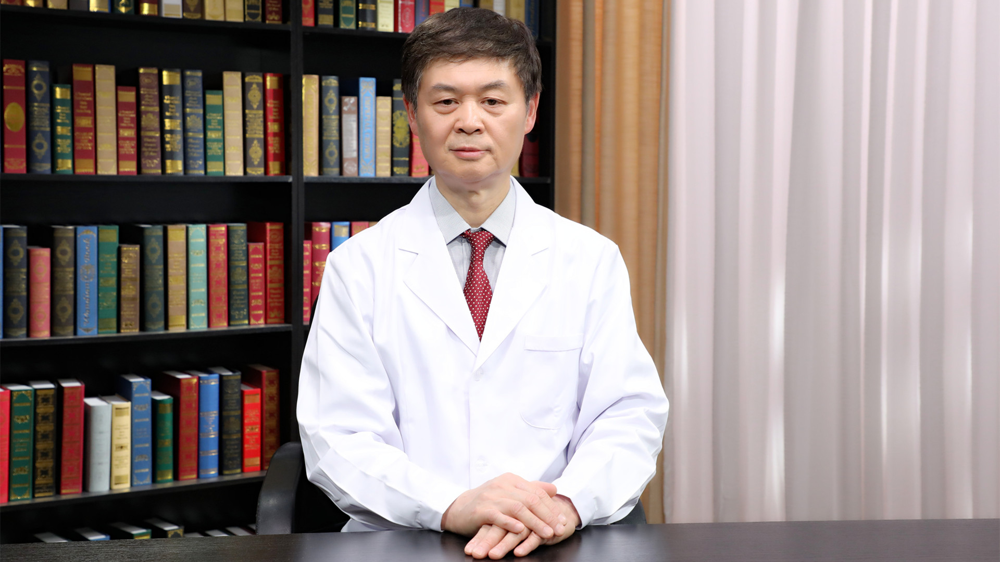

1.37 宫颈癌及癌前病变的相关病理诊断¶
刘东戈 主任医师¶

北京医院国家老年医学中心病理科主任 主任医师教授；
中华医学会病理学分会候任主任委员；中国研究型医院学会超微与分子病理学专业委员会执行主任委员；中国医师协会病理科医师分会常务委员；北京医学会病理学分会主任委员；北京医师协会病理专科医师分会副主任委员；北京市病理质量控制与改进中心副主任委员。
主要成就： 先后在国内外专业杂志发表学术论文90余篇；主编、主译或参编专著10余部；承担省部级以上科研课题5项；获省部级科技进步奖2项，获2019年国际细胞病理学会George L Wied终身成就奖，获2020年“国之名医•卓越建树”奖等荣誉。
专业特长： 从事病理诊断工作近40年，临床病理诊断经验丰富、全面；擅长细胞病理、神经病理、头颈、呼吸和消化等多系统疾病的临床病理诊断。研究工作的重点是神经病理和细胞病理学。
宫颈癌的发展过程和时间是怎样的？¶
（采访）宫颈癌的发展过程是怎样的？
宫颈癌是一个与HPV，也就是人乳头瘤病毒感染相关的恶性肿瘤，它的发病率和死亡率都是比较高的，是严重威胁女性健康的一个恶性肿瘤。
从HPV的感染或者叫人类乳头瘤病毒感染，发展到宫颈癌，一般要经过一个比较长的时间，大概10年左右。从增生到不典型增生，到原位癌，到浸润癌这样的一个过程，这是它的一个发展过程。
（采访）主任，您说它这个过程是从增生到不典型增生，然后是原位癌、浸润癌，那这个癌前病变，它是属于其中的哪一个时期呢？
我们所说的癌前病变是指的原位癌以前的病变，也就是说从不典型增生到原位癌。不典型增生分为高级别的不典型增生和低级别的不典型增生，到原位癌，这些都属于癌前病变。
宫颈癌筛查的目的就是发现宫颈癌的癌前病变，然后进行相应的处理，避免它发展到浸润性癌，这就是医学主要的一个目的。
宫颈癌的分型、分期和分级是怎样的？¶
（采访）主任，宫颈癌具体都分为哪些类型呢？
比较常见的就是鳞癌和腺癌，另外还有一些少见的类型，就是宫颈的恶性肿瘤，这些发病率都比较低。最常见的就是宫颈鳞癌和腺癌。
（采访）主任，您具体跟我们讲讲，宫颈鳞癌和宫颈腺癌它们到底是怎么不一样呢？
这个就是根据肿瘤的来源来分类的，来源于鳞状上皮的宫颈癌，就是所谓的鳞癌。宫颈这个地方除了有鳞状上皮，还有腺体，来源于腺体这个部位的细胞发生恶变的肿瘤，就是宫颈腺癌。它是根据来源不同和病理形态不同，分成这两种类型。
（采访）主任，宫颈癌除了有来源的不同，分为鳞癌、腺癌和其他的类型，有没有分期的不同？
当然有，宫颈早期病变就是宫颈癌前病变，这是早期的。癌前病变分为高度病变和低度病变，高度病变跟宫颈癌的关系就更密切，低度病变发展到宫颈癌需要一定的时间，高度病变发展就比较快了。
如果发展到癌，它的分期就不同了。一般规定突破宫颈基底膜三个毫米以内，是早期浸润性癌；超过三个毫米，就是中期或者晚期的浸润性癌；另外再晚期可以有淋巴结的转移，甚至全身的转移。越晚，它侵犯的深度就越深，甚至发展到淋巴结或者全身的转移。根据这个来进行分期，越晚期的，它的治疗效果越不好，病人的预后越差。
另外一个就是宫颈癌的分级，分级就是我们所说的恶性程度，这个恶性程度也是根据病理来分的。病理上分为高分化、低分化和中分化。
高分化恶性程度就相对比较低，低分化恶性程度就相对比较高，而中分化是处于高分化和低分化之间的分级，它的恶性程度是处于低度恶性和高度恶性之间的程度，这就是所谓的分级。分级实际上是通过病理诊断来进行的。
（采访）主任，分化是什么意思？为什么高分化反倒恶性程度是比较低的呢？
它是病理学的一个专用术语，所谓的高分化，就是说这个肿瘤已经发生癌了，但是它相对于低分化，这个形态的表现比较接近于正常的上皮组织。越接近正常上皮组织，它的恶性程度就越低，或者我们叫它分化越高。
而低分化跟正常组织相差的差别就越大，这种我们叫低分化，它的恶性程度就越高。这都是病理的专用名词。
宫颈癌前病变发展到宫颈癌需要多长时间？¶
（采访）主任，您具体跟我们讲讲，宫颈癌和宫颈的癌前病变它们有什么样的区别呢？
宫颈癌和癌前病变实际上就是根据它有没有浸润来区别的。宫颈的癌前病变一般来说就是没有侵犯到基底膜，在基底膜以上，或者顶多侵犯到基底膜以下三毫米，我们叫早期浸润。早期浸润和原位癌，和高度病变、低度病变，这些都属于癌前病变。
而侵犯到基底膜三毫米以下的癌，我们就叫作浸润性癌，就变成癌了，它预后就比较差。主要根据它侵犯的深度，来确定是癌前病变还是浸润性癌，这样来区别。
（采访）从宫颈癌前病变发展到宫颈癌的话，大概需要多长时间？
宫颈癌前病变发展到宫颈癌，也是要通过病理来诊断。癌前病变有低度病变，有高度病变，有原位癌，有早期浸润性癌。如果是低度病变，发展到宫颈癌，这个一般来说时间比较长，一般来说，大概半年到一年有可能发展。如果是高度病变，那就比较快，大概在三个月、半年以内，可能就发展到浸润性癌了。
当然癌变时间这个数字不是绝对的，一定是三个月、半年或者一个月，或者两个月。不同的人，不同情况之下，实际上是有比较大的区别，我指的是一般的情况。这是从癌前病变发展到浸润性癌，这样的一个时间段。
但是如果是HPV感染以后，有了宫颈的病变，发展到宫颈浸润性癌，这个大概平均在10年左右的时间，这个时间比较长。
（采访）HPV感染之后，宫颈先有了变化，然后再发展到宫颈癌，需要大概10年左右？
对，一般来说要经过10年左右的时间，短的可能不到10年，当然有的可能10年，甚至也有的20年发展到癌。不同的人情况是不一样的，但是平均大概在10年左右的时间。
（采访）主任，宫颈的癌前病变，就算是低度病变的这种癌前病变，它发展到宫颈癌是半年到一年，我们听起来这个时间也不算很长了，这个时候宫颈的癌前病变，它还能可逆吗？能自愈吗？
一般来说低度病变是这样，就是说应该进行处理。但是有一些比如说有生育要求的，密切随访情况之下，在妇科医生的评估之下，可以考虑先生育，然后再处理宫颈的病变。
但是对于一般的人群，没有生育要求的，或者目前没有生育要求的，可能对于低度病变也要进行处理。处理以后，这样的话比较放心，应该是这样。
高度病变一般来说应该尽快进行治疗，防止它发展到浸润性的宫颈癌。
（采访）一旦到了癌前病变的阶段，就没有机会再逆转，没有机会再等它自己好了，是吗？
低度病变相对来说，在严密监控之下，也有一些可能可以逆转。但是高度病变逆转的机会几乎是很少的，或者没有。
筛查宫颈癌需要做哪些检查？¶
（采访）主任，筛查宫颈癌的时候，都需要做哪些检查？
目前筛查宫颈癌，一个就是宫颈细胞学检查，联合做HPV检查，这是目前最主要的宫颈癌筛查的方法。如果细胞学检查发现了有意义不明的不典型鳞状上皮细胞，一般情况下再看HPV的检测结果。如果HPV检测是阳性的，或者人乳头瘤病毒检测是阳性的，这个时候就要做阴道镜。
阴道镜检查是在阴道镜下边看有没有可疑病变的区域，如果发现有病变的区域，再进一步做组织病理，再确定宫颈是一个什么类型的病变。主要是这样的一个方式。
细胞学检查除了发现不典型鳞状上皮病变以外，包括低度病变、高度病变，甚至考虑有宫颈的原位癌，都需要下一步做阴道镜检查，然后取组织学的标本来进行组织病理的诊断。根据组织病理检查的结果，来进行临床相应的处理，包括现在有做锥切的，包括做利普刀等等这些临床的治疗方法。
（采访）主任，如果TCT检查，没有发现什么异常细胞的话，是不是就可以除外宫颈癌了呢？
如果细胞学检查没有问题，HPV检测也是阴性的，那就比较放心，应该是没有宫颈癌或者癌前病变。
但是如果你不做HPV检查，只是细胞学检查是阴性的，最可能的是宫颈没有癌或者癌前病变，但也可能是妇科医生取宫颈分泌物的时候，没有取到有病变的细胞。所以你细胞学诊断，可能诊断没有，就是所谓的假阴性。
所以基于这样的一个可能性，现在一般都是提倡HPV检查跟细胞学联合检查进行筛查。可能特异性和敏感性会更高一些。也就是说细胞学检查，它的特异性比较高，如果你发现宫颈有异常细胞了，说明宫颈病变的可能性就比较大，就是特异性比较高。
但是细胞学检查敏感性相对来说比较低，所谓敏感性低，就是刚才我说的这种情况，它可能有病变，但是细胞学没有取出来，没有发现有异常的细胞，但实际上它已经有宫颈的病变了。也就是说它的敏感性，相对来说不是说100%都敏感，是这么个意思。
HPV检测的敏感性比较高，但是特异性相对来说比较差。有HPV感染，HPV阳性了，但是不等于有宫颈的病变，是这么个意思。也就是说它很敏感，但是HPV阳性不一定就有宫颈的病变，所以它的特异性相对细胞学来说比较低。所以联合做细胞学检查和HPV检查，就能够提高它的特异性和敏感性。
（采访）主任，我们在做宫颈的这些病理检查之前需要注意什么吗？
一般在检查前12个小时到24个小时，要避免性生活、阴道的用药或者冲洗。
多大年龄的女性需要筛查宫颈癌？多长时间查一次？¶
（采访）主任，哪些人需要筛查宫颈癌？
有性生活的这些女性，都应该开始做宫颈癌的筛查。筛查年龄一般来说是到65岁，如果到65岁了，HPV检查和细胞学检查都没有问题的这种，一般来说65岁以上的，可以不用定期来筛查。也就是说筛查的年龄范围是从已婚的或者有性生活史的人群，到65岁以内的，都应该定期进行宫颈癌的筛查。
（采访）就是从有性生活开始一直到65岁，中间是一直要来做宫颈癌的筛查的，是吗？
这个筛查要根据她的细胞学检查和HPV检查的结果，来确定筛查的一个间隔。如果说你做细胞学检查有点问题，但是HPV检查是阴性的。比如说我们做细胞学检查，发现意义不清楚的不典型鳞状上皮细胞，但是HPV检查是阴性的，这种一般是在半年到一年，你要再重复做细胞学和HPV的检测。
但是如果你细胞学的检查是一个低度病变的，或者是高度病变的，就应该做阴道镜了。如果细胞学检查和HPV检查都是阴性的，可能大概三年以后再查就可以，不用一年后再去检查。
就是根据你发生宫颈癌或者癌前病变危险性不同，筛查的间隔有差别，所以做了筛查以后，要在妇科医生的指导下，再确定下次做宫颈癌筛查的时间间隔。一般来说是这样的一个方式。
筛查宫颈癌，TCT和HPV检查都需要做吗？¶
（采访）主任，女性是从有性生活开始做宫颈癌筛查，就需要把细胞学检查和HPV检查都做了吗？
现在一般的观点是这样，30岁以上的人群，做细胞学联合HPV检查。30岁以下的，现在一般主张只做细胞学的检查，一般可以不用做HPV检查。为什么呢？
30岁以下的年轻女性，HPV感染的发生率是比较高的，但是相当多的并不引起宫颈的上皮病变，也就是说不引起癌前病变。所以一般来说是主张30岁以前只做细胞学的筛查，30岁以后联合细胞学和HPV检查来进行筛查。
打了HPV疫苗，还需要定期筛查宫颈癌吗？¶
（采访）主任，我们知道近些年HPV疫苗也是比较火热，打了HPV疫苗的女性，她们还需不需要定期做宫颈癌的筛查？
HPV疫苗的注射一般来说是在青少年，也就是说没有性生活的人群，进行HPV疫苗的注射。HPV疫苗注射以后，不能代替宫颈癌筛查。也就是说也还是要进行定期筛查。筛查的间隔要根据你检查的结果来确定筛查的间隔时间。也就是说注射HPV疫苗也要进行筛查。
（采访）主任，不是说HPV疫苗已经可以预防宫颈癌了吗？我们为什么还需要做筛查？
HPV疫苗可能可以防止HPV，就是人乳头瘤病毒的感染。但是也不是绝对的，也会有一些人可能仍然有HPV的感染，所以不是绝对打上疫苗以后就进入了保险箱，也不是这样。
因为我们知道HPV疫苗有的是2价疫苗，有的是4价疫苗，当然也有9价疫苗，它是针对HPV分型来设计这个疫苗。但是实际上HPV感染，它有一些少见的型，在疫苗里面没有覆盖。可能有这部分类型的病毒感染，感染以后也可以引起宫颈癌或者癌前病变，这是一部分。
另外一个部分，也有的虽然注射了HPV疫苗，但是它的保护性达不到，也就是说机体产生的抗体不能够有效阻止HPV的感染，也不能排除这种可能性。所以注射了HPV疫苗，也仍然要进行宫颈癌的筛查。
宫颈TCT和HPV检查是怎么做的？有什么区别？¶
（采访）主任，您具体跟我们讲讲，宫颈细胞学检查的一个检查流程是怎么样的？
宫颈细胞学的检查流程，一般是由妇科医生取宫颈、阴道的分泌物，然后把分泌物放到保存液里边，就是宫颈细胞学检查的保存液里边，然后送到病理科，由病理科医生制成宫颈液基细胞学涂片，然后由细胞病理学的医生来阅片，观察有没有宫颈的病变，然后做出诊断，发出报告。大概是这样的一个过程。
（采访）主任，您再帮我们介绍一下，HPV检查是怎么做的？是需要抽血？还是需要检查分泌物？
检查分泌物。一般来说就是把宫颈的分泌物取出来以后，放到保存液里边，在病理科一部分做宫颈细胞学的观察，一部分可以做HPV的检测。一般来说取宫颈分泌物就可以了。细胞病理的医生，他如果经验比较丰富，看片比较仔细，如果有病变，他就能够发现。所以这跟细胞学医生的经验、水平、能力有比较大的关系。
而HPV的检测，因为我们现在用的技术不一样，有不同的技术，比如说PCR的技术，导流、杂交的技术，等等这些技术，它实际上是在机器上边通过试剂盒来检查有没有HPV的感染，相对来说它是一个客观的检查，需要通过试剂盒、通过仪器设备来检查，这样的一个过程。
（采访）主任，关于这两个检查的检查结果有什么不一样吗？我们知道HPV检查结果可能就是阳性或者是阴性，这个细胞学检查，它都会有什么样的结果呢？
HPV检查是阳性或者阴性，有的也要进行分型，分为高危型的、低危型的感染，有的人HPV感染是高危型的感染，有的是低危型的感染。低危型的可以引起宫颈的病变，这种一般来说，它引起的是尖锐湿疣这些病变。而高危型的，它可以引起病变，一般是引起宫颈癌或者癌前病变，关系比较密切。
当然有一些人感染了HPV，但是实际上并不引起宫颈病变，机体的免疫功能把这个病毒清除掉了，并不会引起宫颈的病变。这是HPV检查的一个意义。HPV感染了，感染以后有没有引起宫颈的病变，细胞学检查就是观察它病变的一个程度，是不是一个低度病变，还是高度病变，还是癌。
细胞学的检查，它就能够确定有没有病变，病变的性质是什么样？这个跟HPV检查是有明显不同的。HPV检查只是说有没有感染。感染了，但是它有没有引起病变，病变的程度，HPV检查实际上是看不出来的。
病理检查能确诊宫颈癌吗？还需要做B超或影像检查吗？¶
（采访）主任，我们只通过病理检查就能够确诊宫颈癌了吗？还需不需要做一些比如说超声检查、影像学的检查？
确定有没有宫颈癌，需要通过病理来检查。一般来说首先是做宫颈的细胞学检查，如果细胞学检查发现有问题，再做阴道镜取活检，这种情况之下就确定她有没有宫颈癌，包括宫颈癌的类型，它分化的程度或者叫作它的恶性程度。这个通过细胞学联合组织病理学都能够确定。
至于需不需要做其他的检查，比如说B超，比如说影像，这个一般来说是根据病人的病变情况，比如说这个人有宫颈癌了，有的时候临床医生需要她做B超，或者做影像。他要评估这个癌有没有影响到周围的组织，淋巴结或者相关的脏器有没有转移，这个时候需要做一些其他的检查，包括你说的B超，或者是影像来检查。
但是确诊是通过病理检查来确诊，通过病理检查就能确定有没有宫颈癌，类型是什么样的，恶性程度是什么样的。
（采访）病理检查是宫颈癌的金标准？
对，但是在临床上，它的病变范围怎么样？有没有侵犯到其他的组织或者脏器？有的时候需要做B超或者影像等等这些检查。
宫颈TCT报告“未见上皮内病变或恶性病变（NILM）”是什么意思？¶
（采访）主任，宫颈TCT报告上说“未见上皮内病变或者是恶性病变”，这说明是没事吗？
一般来说应该是没事。就是说不是癌或者是癌前病变，但是她可能有其他的病变，所以说完全没事，好像也不是特别科学。比如宫颈炎或者是宫颈的其他病变，我们可能就给她诊断是一个未见上皮内病变或者恶性病变，这样的一个诊断，只能说是这样。
回过头来说，宫颈的细胞学检查，它的敏感性比较差一些，虽然诊断了是一个未见上皮内瘤变，或者恶性病变，但是如果没取到病变组织，可能这个诊断就是这样。所以说联合HPV检查可能对提高诊断的敏感性更好一些。但是一般来说，如果是这样的一个诊断，应该说是没有癌或者癌前病变，是这个意思。
就是这个检查结果不能除外一定没有什么别的情况，但是一般正常情况下都是这个检查结果？
正常应该是这个检查结果，没有癌或者癌前病变是这个检查结果。但是也不能完全说这样的一个诊断就没有什么问题了。有些病人有宫颈炎或其他疾病，实际上从细胞学诊断，也是这样的一个诊断结果，只能说没有癌或者癌前病变，是这么个意思。
宫颈TCT报告“无明确诊断意义的非典型鳞状上皮细胞（ASC-US）”是什么意思？¶
（采访）主任，如果宫颈TCT检查报告上说“无明确诊断意义的非典型鳞状上皮细胞”的话，它表明是什么意思呢？
这个诊断说明可能有问题，也可能没有问题，属于可疑性的这样的一个诊断，它的意思是什么呢？发现了有些细胞有异常，但是不能够确定它就是一个癌前病变，也不能说它一点事儿也没有，实际上是一个不太能够确定的病变，是这么个意思。
对于这种情况，就要联合HPV检测，如果HPV检测是阳性的，特别是16型、18型是阳性的，这种就说明有问题的可能性是比较大的，一般来说要做阴道镜，做组织病理活检。
如果细胞学诊断是不典型的意义不清楚的鳞状上皮细胞病变，但是HPV检测是阴性的，这种病人一般来说就六个月到一年再做细胞学的检查，对这种病变的处理的原则，是按照这样的一个原则来进行处理。
（采访）主任，为什么报告上会说无明确的诊断意义？是因为没有找到异常的细胞吗？
医学上有一些病变不典型，或者有问题的细胞数量比较少，几个，比较少，或者它的病变形态改变不典型、不明显。从医学上来说，不敢确定它是有病变的，但是又不能完全排除它没有问题，在医学上叫作灰区。医生的能力、水平所不能够明确的这样的一类病变，是有这样的一个可能性的。
宫颈TCT报告“非典型鳞状上皮细胞不除外高度鳞状上皮内病变（ASC-H）”是什么意思？¶
（采访）主任，如果宫颈TCT报告上说“非典型鳞状上皮细胞”，但是又有一句“不除外高度鳞状上皮内病变”，这个是什么意思？
这个比意义不明确要更明确一些。非典型鳞状上皮细胞，但是不除外高度病变，这个往往很可能就是一个高度病变，接近于癌，或者是原位癌或者是浸润癌这样的一个病变。
但是为什么写不除外，它的意思就是说有一些很可疑的细胞，但是它的数量相对比较少，形态不是特别典型，但是看起来还是特别像高度病变的细胞。如果发现这种细胞，就是不除外高度病变的细胞，这种要做阴道镜，要取活检，来进一步证实，她到底有没有宫颈的癌前病变。
（采访）主任，这种情况直接就去做阴道镜和活检，还需要做HPV检查吗？
如果没有做，像这种病变其实都不用再做了，直接做活检应该就可以。当然如果你要是联合做，对你的提示意义就更大。就算联合做，如果HPV阴性的这种病变，一般来说也应该做活检。
就是说你要看到这种细胞，不管HPV检测是阳性还是阴性，都应该做阴道镜，做活检。所以如果没做，就不需要再做HPV检测。
宫颈TCT报告“低度鳞状上皮内病变（LSIL）”或“高度鳞状上皮内病变（HSIL）”代表什么？¶
（采访）主任，宫颈TCT报告上如果说是有“低度鳞状上皮内病变”的话，是什么意思呢？
低度病变就是说有这种叫异型增生的细胞，宫颈的鳞状上皮累及到下1/3的位置，在细胞学上的表现就是核有增大，有核周空晕这样的一种改变，组织学就表现这种病变的细胞，异型的细胞，它大概在鳞状上皮下1/3的位置，这是低度病变。
如果细胞学诊断是一个低度病变，这种就要做阴道镜，做活检，来进一步证实有没有这个病变，然后采取相应的处理办法。
（采访）如果宫颈TCT报告上说的是“高度鳞状上皮内病变”，是什么意思呢？
高度病变就更严重了，就比低度更严重了，而且这种就更接近于宫颈癌这样的一个病变。这种也应该是马上做阴道镜，取活检，做组织病理诊断，确定以后再做相应的处理。
（采访）低度鳞状上皮内病变，它经过一段时间是会发展为高度鳞状上皮内病变吗？
有一部分会发展，或者有一部分本身就有高度病变，当然也有的低度病变，有一部分它是可以消退的，是一个可逆的，是这样的一个情况。
宫颈TCT报告“腺细胞异常”，是什么意思？¶
（采访）主任，宫颈TCT报告上说“腺细胞异常”，是什么意思呢？
宫颈癌包括鳞癌和腺癌，来源于鳞状上皮的宫颈癌，就是所谓的鳞癌。宫颈这个地方除了有鳞状上皮，还有腺体，来源于腺体这个部位的细胞，发生恶变的肿瘤，就是宫颈腺癌。腺细胞异常是表示腺上皮细胞有异型增生，或者不典型增生，或者有可能发展到腺癌这样的一类细胞学的改变。
我们如果发现有腺上皮的异常，或者叫不典型腺细胞或者腺上皮细胞异常的这种病人，一般来说要做HPV检测。因为腺上皮的异常，它比鳞状上皮跟HPV感染之间的关系要差一点，有一部分腺上皮病变可能跟HPV的感染没有关系，但是相当多还是跟HPV感染有关系。如果发现这种病变也是要做HPV检测。
如果HPV检测是阳性的，特别是16型、18型阳性，肯定要做阴道镜，然后做活检，甚至宫颈管的搔刮，看它组织学的改变。
如果HPV检测是阴性的，也应该密切随访，必要的话也要做宫颈阴道镜的活检，或者宫颈管的搔刮，取组织病理证实有没有腺癌，是这样一个过程。
宫颈TCT报告提示“鳞癌”或“腺癌”，可以确诊是宫颈癌了吗？¶
（采访）主任，如果宫颈TCT报告说“鳞状上皮癌”或者“腺癌”，这个是直接就确诊为宫颈癌了吗？
细胞学提示有鳞状上皮病变，或者鳞癌，或者腺上皮病变，或者腺癌，这个是提示。如果要是进一步确诊，往往都需要做组织病理，也就是说做阴道镜，取活检，组织病理进一步证实是不是鳞状上皮病变，或者鳞癌，是腺上皮病变，或者腺癌，然后再进行临床的处理。
细胞学检查是起到一个提示作用，因为细胞学是一个无创的检查。为了进一步证实它，来进行处理，往往是需要做组织病理再证实。
（采访）主任，细胞学已经提示说是“鳞癌”或者“腺癌”了，是不是大概率就已经能确定是癌了？
基本上是可以确定，绝大多数都能够确定。你要是诊断了鳞癌或者腺癌，临床要进行进一步的治疗，包括手术，甚至大的手术。为了对病人更负责，往往要去做组织病理检查，因为它的诊断相对细胞学检查更准确、更可靠。
所以为了保险起见，还得要做组织病理活检的证实，就怕万一细胞学诊断不是特别准确，给病人手术做的不对了，或者治疗的策略不对了，当然给病人造成了伤害，那是不好的。
宫颈细胞学主要是起到筛查的一个作用，提示有没有可能有病变，如果提示是有鳞癌或者腺癌，组织病理符合率是很高的，绝大多数都能够符合。
宫颈TCT报告“炎症反应性细胞”是什么意思？¶
（采访）主任，宫颈TCT报告上说“炎症反应性细胞”是什么意思呢？
炎症反应性细胞是一个良性的情况，往往是有宫颈炎等等这些病变。它的出现就表示宫颈的上皮细胞是有增生的，但是它没有达到低度病变或者高度病变那样的一个程度，所以这种往往是一个良性炎症性病变的改变。
（采访）主任，出现了这个结果之后需要做什么检查吗？
一般来说，这种应该是没有什么大的问题，当然临床上一般是针对宫颈的炎症进行一个治疗或者处理就可以了。
宫颈TCT报告“霉菌感染”是怎么回事？¶
（采访）主任，宫颈TCT报告上说“霉菌感染”是怎么回事呢？
霉菌感染，因为宫颈这个部位也是霉菌感染引起霉菌性阴道炎的一个常见的病。如果提示有霉菌感染，就是在宫颈的分泌物里面看到了有霉菌的病原体，比较常见的比如说念珠菌，或者是酵母菌，它有菌丝，有孢子，细胞学涂片的时候可以看到这些病原体，就提示有霉菌的感染，这样的一个意义。
（采访）霉菌感染和宫颈癌是没有什么关系的？
应该是没有太大的关系。当然有一些人，她可能合并有癌，这是可以的，但是霉菌跟癌之间没有确切的关系。不像HPV感染，它有确切的一个关系，这个没有确切的关系。
HPV16型、HPV18型阳性，是得了宫颈癌吗？¶
（采访）主任，如果查出来HPV16型和HPV18型是阳性的话，可能会是宫颈癌吗？
不一定，有这个感染并不等于一定是宫颈癌。但是如果要是有16型、18型HPV感染，往往需要做阴道镜取活检，来看有没有癌或者癌前病变。但是不是说有16型、18型的HPV感染，一定发生宫颈癌或者癌前病变。
（采访）HPV16型、18型通常情况下是两个都会阳性？还是说只是其中一个会有阳性？
不一定两个都阳性，有的时候可能16型阳性，有的时候18型阳性，不一定都阳性。
（采访）主任，跟宫颈癌关系比较大的HPV病毒，除了16型、18型，还有其他的吗？
还有一些其他类型，不同国家和地区，它的型不同，很多种类型，58型等等，我们中国这种相对来说比较少。多数跟宫颈癌相关的型是以16型、18型为主的这样的类型。其他少见的一些类型占的比例都很小。那个还有很多种类型。
HPV16型、18型阳性，TCT结果正常，是怎么回事？¶
（采访）主任，为什么有时候会出现HPV的检查结果是阳性，但是TCT结果却是阴性的情况呢？
这种情况实际上并不少见。这种往往由于有HPV感染，但是并没有发展到宫颈癌或者癌前病变。这种HPV检查是阳性的，但是细胞学是正常的，这是完全可以的。
HPV的感染，实际发病率更高，但是相当多的情况，就是有了感染以后，它通过机体的抵抗力，把这个病毒清除掉了，它并不能够引起宫颈的病变。
只有一部分或者少部分人HPV感染以后，由于机体不能够把这个病毒清除掉，然后病毒的DNA跟人体宫颈上皮的DNA相整合，整合以后，它就引起了宫颈的上皮内病变，然后从增生、不典型增生，或者叫异型增生，发展到原位癌、浸润癌这样的一个过程。HPV感染引起癌的过程是这样的一个过程。
（采访）在HPV阳性，但TCT是阴性的情况下，需要特别去处理吗？
细胞学检查是阴性的，但是HPV16型、18型是阳性的。目前的观点，就是也是需要做阴道镜的检查，看看有没有可疑的病变，取活检来进一步证实。
因为16型、18型的HPV跟宫颈癌的关系确实是比较密切，如果有感染的话，要防止把病变给漏掉。所以按照现在治疗的一个规范或者筛查的规范，可以做阴道镜来检查，进一步证实它。或者你要密切随访，对这种要高度重视。
HPV11型、6型阳性，会是宫颈癌吗？¶
（采访）主任，HPV11型阳性是什么意思呢？
11型是一个低危型的HPV病毒，这种型一般来说跟宫颈癌或者癌前病变没有密切相关性。也就是说11型HPV的感染往往不引起宫颈癌或者癌前病变，它主要是引起良性的疾病，叫尖锐湿疣，往往是由11型或者其他类型，比如6型，都是低危型的HPV类型，它跟癌的关系不是很大。
（采访）主任，如果查出来低危型的HPV阳性的话，需要做什么检查？
低危型阳性一般也是跟细胞学联合检查，如果细胞学也没问题，11型HPV一般来说跟宫颈癌的关系不是很密切，定期再进行筛查就可以了。
阴道镜检查提示“中度宫颈糜烂”，可能是宫颈癌或宫颈癌前病变吗？¶
（采访）主任，如果阴道镜报告说“宫颈中度糜烂”，可能是怎么回事呢？
往往宫颈糜烂就提示宫颈可能有病变，包括是癌或者癌前病变。当然也有一些其他非肿瘤性的病变，也可以表现是一个宫颈糜烂的这种情况。只是提示从阴道镜看宫颈有这种改变，可能是癌或者癌前病变，也可能不是，是其他的良性病变，都可以。
并不是绝对和宫颈癌有关？
不是绝对的。
宫颈鳞状上皮化生是良性病变，还是恶性病变？¶
（采访）主任，宫颈阴道镜报告说“鳞状上皮化生”，是什么意思呢？
鳞状上皮化生也是一个良性的病变、反应性的一个改变。正常情况之下腺体叫腺上皮，如果它在炎症的刺激之下，腺上皮可以变成鳞状上皮，我们就把腺上皮变成鳞状上皮，叫作鳞状上皮的化生。它的意思就是说正常一种上皮变成了另一种上皮，这种就叫化生。
化生往往一般都是在炎症的刺激之下发生的，就是一种上皮变成另一种上皮。这种变成另一种上皮，这个上皮是个良性的，它不是恶性的。如果是恶性的那就不叫化生了，一种正常的上皮变成另一种相对比较正常的上皮就叫化生。如果腺上皮变成鳞状上皮了，就叫鳞状上皮化生。
实际上阴道镜说化生，它只是提示是有宫颈炎这种改变，但是是不是有化生，需要病理来证实。
（采访）主任，您说一般有化生是良性的、正常的，如果恶性就不叫化生，一般恶性会叫什么呢？
恶性就是腺上皮变成腺癌了，或者腺的一个原位癌等等这样的，变成的组织是不正常的，是肿瘤性病变，不是叫化生性的改变。
阴道镜检查结果为“宫颈可见醋白上皮、碘试验着色”，是什么意思？¶
（采访）主任，宫颈阴道镜检查说“可见醋白上皮”，是什么意思呢？
医生在不借助于醋酸白涂抹的情况之下，宫颈的病变有时候很难认，认不出来，有病变的部位和没有病变的部位，有的时候看不清楚。这样的话，做阴道镜的医生，他就把醋酸涂抹在宫颈上。涂抹以后，如果是正常的上皮，它就不变成白色的，而有病变的细胞就变成了白色。
这样的话妇科医生取材，取宫颈活检，就取涂上了醋酸以后变成白色的部位，然后进行病理的检查，就叫作所谓的醋酸白试验，就是有病变的细胞，它往往变成白色的，是这个意思。
（采访）主任，这些变成白色的有病变的细胞，它是癌症的概率大吗？
有一定的概率，但是并不是所有的变成白色的，一定都是癌或者癌前病变，它比不变的相对来说概率要大一些。对于更准确的取材，有一个提示的作用。但是不是绝对的，有变成白色的，一定是癌或者癌前病变，其实是不一定的。
（采访）我们还是得取下来做了病理才知道？
做了病理才能知道。
（采访）主任，宫颈阴道镜检查的“碘试验着色”，是什么意思？
其实跟醋酸白试验有点相似，有的时候是用碘涂那个点，来判断有没有可能有病变。碘涂上以后，如果是正常的碘的那个黄色，往往就是没有病变的细胞，如果是有病变的细胞，它常常就改变了颜色，或者变成有点棕色的这样的一个颜色，或者发黄白色的这种，往往是有病变的细胞。
其实跟醋酸白的试验有一点相似，就是有改变的这些细胞可能有病变。所以妇科医生就在这个部位取活检来做病理的检查。但是现在好像还是用醋酸白相对比较多一些。
（采访）这个碘试验和醋酸白试验的目的是一样的，都是为了找出那些有病变的细胞？
对，是的。
宫颈癌筛查的病理报告一般多久能出？¶
（采访）宫颈癌的筛查，病理报告一般多久能够出来？
这个是这样，一般来说，门诊病人到医院去看病，做宫颈的液基细胞学检查（TCT），三个工作日以内，应该就能够出来。
但是如果是一个筛查，筛查往往是正常人体检，而且是一次一个单位去很多人筛查，到医院或者到体检中心等机构去检查。一次去的人很多，往往可能这种时间要比较长一点，各个单位不完全一样，健康人体检可能要长一点，大概一两个星期时间出来。但是如果到医院门诊去看病，这种一般在三个工作日就能出来。
（采访）主任，一般取活检的这种病理报告多久能出来？
活检大概也是在一个星期的时间，活检比细胞学检查的报告时间要稍微长一点。大概在一个星期以内，或者我们叫5个工作日以内，应该就能够出来。
宫颈癌筛查后阴道出血，是正常现象吗？¶
（采访）主任，有些人发现自己做了宫颈的病理检查之后，会有一些出血，这是正常的吗？
少量的出血一般是比较正常的。因为她做检查总是会有轻度阴道组织的一些损伤，少量出血是正常的。但是如果是出血量比较多，持续时间比较长，可能就损伤比较大。这种要到妇科，由妇科医生来看，有没有什么大的损伤。如果发现有问题要及时进行处理。
（采访）主任，在进行了宫颈癌的筛查之后，多久就可以进行性生活了呢？
一般要在24个小时以后。
从感染HPV到发展成宫颈癌要多长时间？¶
宫颈癌是一个与HPV，也就是人乳头瘤病毒感染相关的恶性肿瘤，它的发病率和死亡率都是比较高的，是严重威胁女性健康的一个恶性肿瘤。
从HPV的感染或者叫人类乳头瘤病毒感染，发展到宫颈癌，一般要经过一个比较长的时间，一般来说要经过10年左右的时间，短的可能不到10年，当然有的可能10年，甚至也有的20年发展到癌。不同的人情况是不一样的，但是平均大概在10年左右的时间。
从增生到不典型增生，到原位癌，到浸润癌这样的一个过程，这是它的一个发展过程。
宫颈癌前病变是指什么？¶
癌前病变是指原位癌以前的病变，也就是说从不典型增生到原位癌。不典型增生分为高级别的不典型增生和低级别的不典型增生，高度病变跟宫颈癌的关系就更密切，低度病变发展到宫颈癌需要一定的时间，高度病变发展就比较快了。
宫颈癌前病变一般来说就是没有侵犯到基底膜，在基底膜以上，或者顶多侵犯到基底膜以下三毫米，我们叫早期浸润。早期浸润和原位癌，和高度病变、低度病变，这些都属于癌前病变。 而侵犯到基底膜三毫米以下的癌，叫作浸润性癌，就变成癌了，预后就比较差。主要根据侵犯的深度，确定是癌前病变还是浸润性癌。
宫颈癌筛查的目的就是发现宫颈癌的癌前病变，然后进行相应的处理，避免发展到浸润性癌，这就是医学主要的一个目的。
宫颈癌高分化、中分化、低分化，是指什么？¶
宫颈癌的分级，病理上分为高分化、低分化和中分化，它是病理学的一个专用术语。
所谓的高分化，就是说已经发生癌了，但是相对于低分化，这个形态的表现比较接近于正常的上皮组织。越接近正常上皮组织，恶性程度就越低，或者叫它分化越高。
而低分化跟正常组织差别就越大，这种叫低分化，恶性程度就越高。
而中分化是处于高分化和低分化之间的分级，恶性程度是处于低度恶性和高度恶性之间的程度。
这就是所谓的分级，分级实际上是通过病理诊断来进行的。
宫颈低度病变要尽快治疗吗？¶
如果是低度病变，发展到宫颈癌，一般来说时间比较长，大概半年到一年有可能发展。如果是高度病变，就比较快，大概在三个月、半年以内，可能就发展到浸润性癌了。
当然癌变时间这个数字不是绝对的，一定是三个月、半年或者一个月，或者两个月。不同的人，不同情况之下，实际上是有比较大的区别，我指的是一般的情况。这是从癌前病变发展到浸润性癌，这样的一个时间段。
一般来说低度病变应该进行处理，有一些比如有生育要求的，密切随访的情况之下，在妇科医生的评估之下，可以考虑先生育，然后再处理宫颈的病变。对于一般的人群，没有生育要求的，或者目前没有生育要求的，对于低度病变也要进行处理，处理以后比较放心。高度病变一般来说应该尽快进行治疗，防止发展到浸润性宫颈癌。
宫颈细胞学检查（TCT）+HPV检查¶
作用及意义
目前筛查宫颈癌，一个就是宫颈细胞学检查，联合做HPV检查，这是目前最主要的宫颈癌筛查的方法。
细胞学的检查，能够确定有没有病变，病变的性质是什么样。HPV检查只是说有没有HPV感染。感染了有没有引起病变，病变的程度，HPV检查实际上是看不出来的。
但是如果不做HPV检查，只是细胞学检查是阴性的，最可能的是宫颈没有癌或者癌前病变，也可能是妇科医生取宫颈分泌物的时候，没有取到有病变的细胞，细胞学诊断可能诊断没有，就是所谓的假阴性。
所以基于这样的一个可能性，现在一般都提倡HPV检查跟细胞学联合检查进行筛查，可能特异性和敏感性会更高一些。也就是说细胞学检查的特异性比较高，如果发现宫颈有异常细胞了，说明宫颈病变的可能性比较大，就是特异性比较高。
但是细胞学检查敏感性相对来说比较低，所谓敏感性低，就是刚才我说的这种情况，可能有病变，但是细胞学没有取出来，没有发现有异常的细胞，但实际上已经有宫颈的病变了，也就是说它的敏感性，相对来说不是说100%都敏感，是这么个意思。
HPV检测的敏感性比较高，但是特异性相对来说比较差。有HPV感染，HPV阳性了，但是不等于有宫颈的病变，是这么个意思，所以它的特异性相对细胞学来说比较低。
所以联合做细胞学检查和HPV检查，就能够提高它的特异性和敏感性。
筛查人群
有性生活的女性，都应该做宫颈癌筛查。
筛查年龄一般来说是到65岁，如果到65岁了，HPV检查和细胞学检查都没有问题，一般来说65岁以上，可以不用定期来筛查。
检查流程
一般在检查前12个小时到24个小时，要避免性生活、阴道用药或者冲洗。
宫颈细胞学的检查流程，一般是由妇科医生取宫颈、阴道的分泌物，然后把分泌物放到保存液里边，就是宫颈细胞学检查的保存液里边，然后送到病理科，由病理科医生制成宫颈液基细胞学涂片，然后由细胞病理学的医生来阅片，观察有没有宫颈的病变，然后做出诊断，发出报告。
一般来说就是把宫颈的分泌物取出来以后，放到保存液里边，在病理科一部分做宫颈细胞学的观察，一部分可以做HPV的检测。
而HPV的检测，因为我们现在用的技术不一样，有不同的技术，比如PCR的技术，导流、杂交的技术，等等这些技术，实际上是在机器上边通过试剂盒来检查有没有HPV感染，相对来说它是一个客观的检查。
检查结果分析
如果细胞学检查发现了有意义不明的不典型鳞状上皮细胞，一般情况下再看HPV的检测结果。如果HPV检测是阳性的，这个时候就要做阴道镜。
细胞学检查除了发现不典型鳞状上皮病变以外，包括低度病变、高度病变，甚至考虑有宫颈的原位癌，都需要下一步做阴道镜检查，然后取组织学的标本来进行组织病理的诊断。
如果细胞学检查没有问题，HPV检测也是阴性的，就比较放心，应该是没有宫颈癌或者癌前病变。
复查
如果做细胞学检查有点问题，比如做细胞学检查，发现意义不清楚的不典型鳞状上皮细胞，但是HPV检查是阴性的，这种一般是在半年到一年，要再重复做细胞学和HPV的检测。
但是如果细胞学检查是一个低度病变的，或者是高度病变的，就应该做阴道镜了。
如果细胞学检查和HPV检查都是阴性的，可能大概三年以后再查就可以，不用一年后再去检查。
根据发生宫颈癌或者癌前病变危险性不同，筛查的间隔有差别，所以做了筛查以后，要在妇科医生的指导下，再确定下次做宫颈癌筛查的时间间隔，一般来说是这样的一个方式。
宫颈鳞癌、宫颈腺癌¶
宫颈癌包括鳞癌和腺癌。
来源于鳞状上皮的宫颈癌，就是所谓的鳞癌。
宫颈这个地方除了有鳞状上皮，还有腺体，来源于腺体这个部位的细胞，发生恶变的肿瘤，就是宫颈腺癌。
宫颈感染HPV后机体能把病毒清除掉吗？¶
HPV感染实际发病率很高，但是相当多的情况，就是有了感染以后，通过机体的抵抗力，把这个病毒清除掉了，并不能够引起宫颈的病变。
只有一部分或者少部分人HPV感染以后，由于机体不能够把这个病毒清除掉，然后病毒的DNA跟人体宫颈上皮的DNA相整合，整合以后，就引起宫颈的上皮内病变，然后从增生、不典型增生，或者叫异型增生，发展到原位癌、浸润癌这样的一个过程，HPV感染引起癌的过程是这样的一个过程。
宫颈鳞状上皮化生¶
正常情况之下腺体叫腺上皮，如果在炎症的刺激之下，腺上皮可以变成鳞状上皮，我们就把腺上皮变成鳞状上皮，叫作鳞状上皮的化生。意思就是说正常一种上皮变成了另一种上皮，这种就叫化生。
化生往往一般都是在炎症的刺激之下发生的，这种变成另一种上皮，这个上皮是良性的，不是恶性的，如果是恶性的就不叫化生了。一种正常的上皮变成另一种相对比较正常的上皮叫化生，如果腺上皮变成鳞状上皮了，就叫鳞状上皮化生。